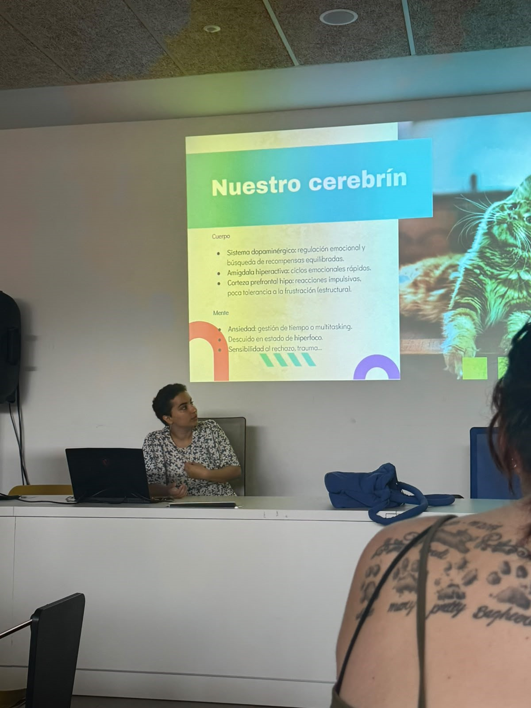

Community
Talks on accessibility, neuroscience and emotional wellbeing.
Product & UX/UI designer in Madrid. I work out why complex products are hard to use, then fix them, with research, accessibility and design systems.
I'm Zainab, a UX/UI and product designer in Madrid. I look at how people behave, what the product needs and what the code allows, and design from there.
I've worked on education platforms and B2B SaaS, products with many services, teams and connected workflows. I'm most interested in research, accessibility and design systems, and in turning evidence into something the team building the product can use.
I've always wanted to design around the user. I started in interior design and moved to product design because I wanted to work on accessibility and ergonomics. Even before I began, I knew I would specialise in digital: more of our lives happen there, and improving how a search works has more impact than fixing a chair.
I'm now doing a master's in research methodology for behavioural and health sciences, because I want to get better at asking questions and reading what people do. I also took a break from work for health reasons, and I'm back.
Painting, poetry, theatre and violin have been part of my life since I was a kid, and aikido, yoga and meditation shape how I handle attention, empathy and learning. I speak Spanish, French, English, Arabic and Italian, which helps when a product has to work in more than one place.
What I do when I'm not in Figma

Talks on accessibility, neuroscience and emotional wellbeing.

Workshops on emotional regulation, fascia work and Theatre of the Oppressed with mixed and neurodivergent groups.

Collaborative projects connecting painting, writing, theatre and performance.

LARP, D&D, board games, video games. I like the stories people build together.